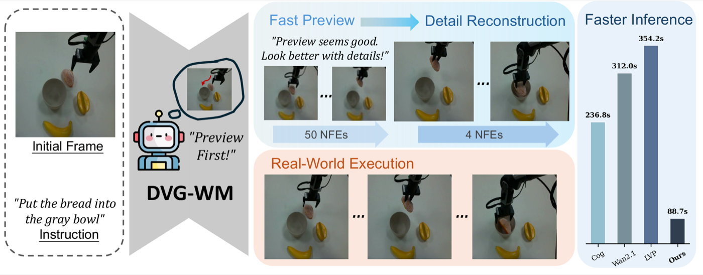
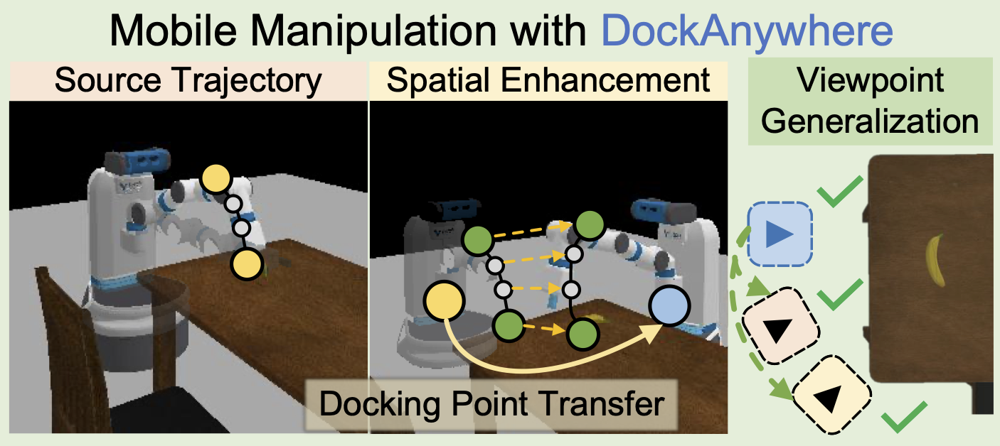

ECCV 2026

I am a first-year PhD student at the Perception and embodied INtElligence (PINE) Lab, Nanyang Technological University, advised by Prof. Ziwei Wang. I am currently a research intern at NVIDIA, working closely with Duomin Wang.
Before that, I received my Bachelor's and Master's degrees from Shanghai Jiao Tong University (SJTU), where I worked closely with Prof. Yiling Xu and Rui Ye.
My research interests lie in embodied AI, world models, media perceptual quality assessment (e.g., 3D point clouds, images) and low-level vision. Currently I focus on world action models (WAM), vision-language-action models (VLA) and mobile manipulation.
* Equal contribution † Corresponding author




IEEE International Conference on Acoustics, Speech and Signal Processing (ICASSP)

IEEE Transactions on Visualization and Computer Graphics (TVCG), 2023
NVIDIA · with Duomin Wang
PINE Lab, Nanyang Technological University
Shanghai Jiao Tong University
Journal reviewer: TPAMI, TIP, TAI, TCSVT, TOMM, Neurocomputing
Conference reviewer: NeurIPS, CoRL, AAAI, ACM MM, ICME